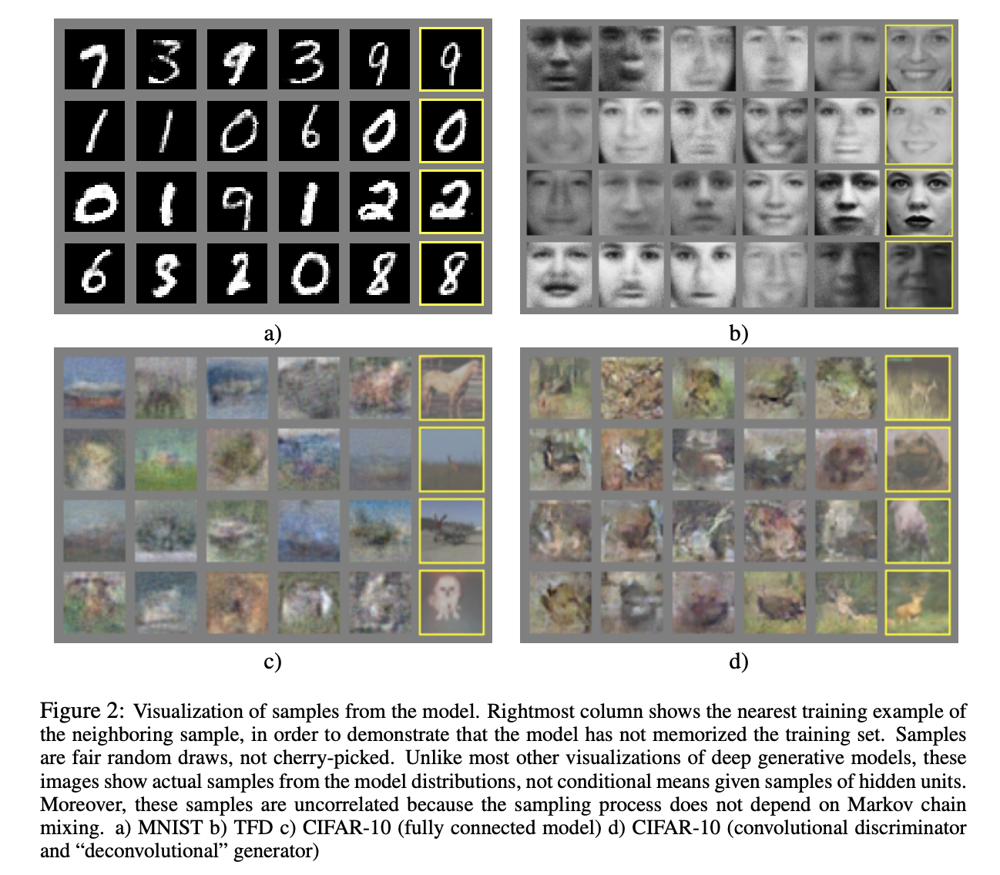
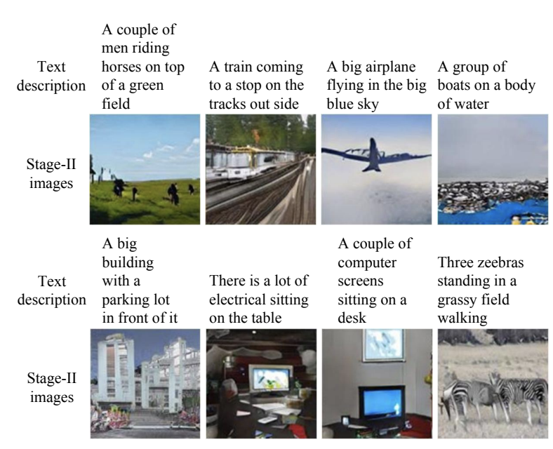
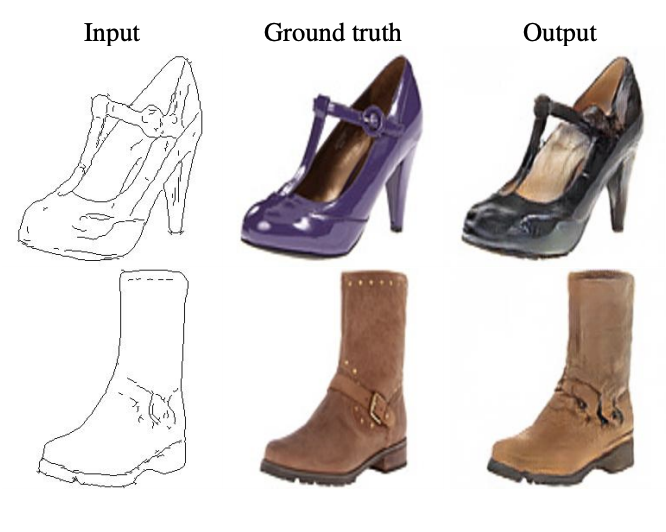
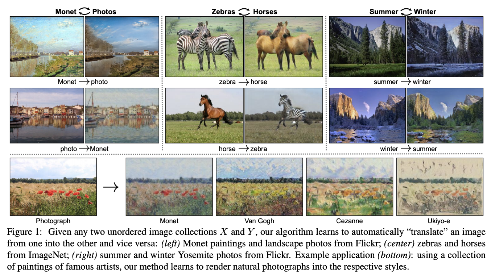

Generative Adversarial Networks: State-of-The-Art and Applications
Generative Adversarial Networks: what are we talking about?
GANs (Generative Adversarial Networks) is a framework for estimating a generative model on a training dataset, i.e. a model able to generate new samples following the same distribution as the dataset. For example, a generative model trained on a cat images dataset is able to generate images of cat which are not in the dataset but which look like cats.
GANs have been introduced for the first time in 2014 in this famous paper. In a nutshell, two models are trained jointly:
A generative model G that can generate a new sample from a random noise
A discriminative model D that predicts the probability for a sample to come from the training dataset or from the generative model
In the training procedure, G is trained to fool D (its goal is that D predicts that a sample generated by G actually comes from the training dataset), while D is trained to classify correctly the samples generated by G and the samples in the training dataset.
GANs training process
We don't provide here a more detailed description of how GANs are trained as this is not the primary goal of this post, and numerous posts have been written about this.
The Long Road from 2014
The paper introducing GANs written in 2014 presents some applications on images generation (see figure). However, due mainly to high compute cost and training instabilities, the images generated are often noisy and do not look realistic. Hence, GANs still had few practical applications at this time.

Images generated by the first version of GANs (2014)
Generative models are hard to evaluate: the most relevant metric in practical applications measures the quality of the generated sampled as perceived by humans. Evaluation metrics like Inception Score or Frechet Inception Distance (clearly introduced in this post) are known to correlate well with the perceived quality of samples: although those metrics' absolute values are hard to interpret, they are interesting to compare the quality of different generative models.
In what follows, we focus on the problem of images generation and we provide an overview of the architectures based on GANs built since 2014 and which unlock many practical applications. When available, we give for information the Frechet Inception Distance (a.k.a FID) computed (the lower the better).
The Power of GANs Combined with Convolutional Neural Networks
Built in 2016, DCGANs (Deep Convolutional Generative Adversarial Networks) is the first successful attempt at using CNNs architectures in the generative and discriminative models, and is able to generate much more realistic images. However, the quality and resolution of generated images remain far from real images.
It has been followed by numerous works bringing improvements in architectures and training. According to us, the most significant are:
BigGAN (2019, FID around 10) trains GANs at a much larger scale than previous attempts and brings improvements to stabilize the training process. This model is able to generate high-resolution images and most of them can hardly be distinguished from real images
StyleGAN2 (2020, FID around 2), built on top of StyleGAN (2019, FID around 5), is as of today the state-of-the-art model for images generation. Models able to generate very realistic human faces, horses, churches, living rooms and many others have been open-sourced for large-scale use
The illustration below shows images generated by StyleGAN2 trained on datasets of human faces, cars, churches, horses or living rooms. It is worth noting that the images generated have not been cherry-picked, which explains some irregularities on a few of them. Though, it is impressing to see how those images are globally very good-looking.
A very nice feature of GANs we want to highlight is that they provide a way to go from one generated image to an other through a continuous set of realistic images. For each model, we show here images interpolated images between two images picked randomly.
Conditional GANs
An other interesting research direction related to GANs is the development of conditional GANs, that are GANs able to generate samples conditional on an variables. Numerous architectures have been developed to answer different needs, including the following examples:
StackGAN (2017) generates images conditionally to a user-defined text, like "Draw me a sheep"
Pix2Pix (2018) generates images conditionally on a user-defined image, and has many applications like colorizing black and white images or building realistic pictures from human-drawn sketches. A drawback of the approach is that it needs paired training data: for example, to build a mode generating pictures from human-drawn sketches, you need to provide a dataset with sketches and the corresponding pictures
CycleGAN (2018) is an other approach to generate images conditional to a user-defined image. Its main advantage compared to the Pix2Pix model is that the training does not need paired training data: to build a model able to generate images from human-drawn sketches, you only need a dataset of sketches and a dataset of pictures, not necessarily paired. Some applications are season transfers or generating pictures from landscape painting

Illustration of StackGan

Illustration of Pix2Pix

Illustration of CycleGan
Applications: A New Future is Coming
As highlighted in this post, GANs capabilities have been considerably improved since their creation in 2014. While very few practical applications were possible at that time, recent theoretical breakthroughs in GANs architectures and training process enable impressive applications. Also, GANs training is known to be hard and hungry in terms of computing power: the continuous decrease in compute cost will enable even more impressive GANs in a close future.
To conclude, we list below some fields which may be heavily impacted by GANs in the coming years:
Information The computer-aided generation of realistic texts, images, videos or speeches will probably disrupt the media industry, for better or for worse. Working on models able to detect which content has been generated by a computer or created by humans will be key to avoid fake news at an unprecedented scale
Design What if a shoe designer could run a GAN trained on shoe pictures to generate new samples from simple sketches she draws? This simple example shows how GANs can help designers, and more generally all creative professions to be much more productive
Education GANs can generate a realistic video of a world-renowned teacher giving her lectures in many languages, bringing her deep knowledge of her field to millions of people around the world
Art This is an ovious application field for GANs: many computer scientists and/or artists have trained GANs on pieces of art. Edmond de Belamy is the first artwork created using AI featured in a Christie's auction and has been sold for more than $400.000
This list of applications is very restrictive and we can't wait to see how GANs will contribute to shape our technological future!